PART I · PRODUCT CHARACTERISTICS
제품의 정체성과 차별점
왜 필요한가, 무엇을 연결하는가, 기존 시스템과 어떻게 공존하는가, 어떤 신뢰 체계를 갖추는가를 설명합니다.
경영 문제
업무·데이터·의사결정이 분리된 현실
WHY제품 해법
통합 의미 모델과 폐루프 경영
WHAT신뢰 기반
권한·범위·근거·버전·결정론
TRUSTPRODUCT & FEATURE GUIDE · 2026
제품 특성은 제품 특성대로, 실제 프로그램은 실제 화면대로 분리해 설명하는 AI Factory Studio 제품 및 기능소개서입니다.
How to read
앞부분은 AI Factory Studio가 해결하려는 경영 문제와 제품 구조를 설명하고, 뒷부분은 현재 구현된 실제 화면을 기준으로 기능·입력·출력·통제·연계를 설명합니다.
PART I · PRODUCT CHARACTERISTICS
왜 필요한가, 무엇을 연결하는가, 기존 시스템과 어떻게 공존하는가, 어떤 신뢰 체계를 갖추는가를 설명합니다.
업무·데이터·의사결정이 분리된 현실
WHY통합 의미 모델과 폐루프 경영
WHAT권한·범위·근거·버전·결정론
TRUSTPART II · PRODUCT FUNCTIONS
각 기능을 누가, 왜, 어떤 데이터로 사용하며 무엇이 남고 다음 단계와 어떻게 연결되는지를 현재 제품 화면과 함께 설명합니다.
사용자가 이 화면에서 해결하는 일
PURPOSE입력·처리·출력·권한·감사
CONTRACT앞 단계와 다음 단계의 연결
FLOW표기 원칙: CURRENT PRODUCT는 현재 코드에서 확인한 화면입니다. 제품 방향 또는 고도화 대상은 별도로 표기합니다. 화면 내 수치는 검증용 예시 데이터일 수 있습니다.
Product definition
AI Factory Studio는 모든 업무를 대체하는 단일 시스템이 아니라, 기존 ERP·MES·LPL·파일·외부 데이터와 공존하며 경영 판단에 필요한 의미와 실행 수단을 연결합니다.
CORE IDENTITY
수주·구매·생산·품질·물류·판매·회계 데이터를 경영 의미로 연결하고, 조건 변화가 생산·현금·손익·리스크에 미치는 영향을 설명 가능한 계산으로 보여줍니다.
현업이 필요한 업무 SW를 상담·요구정의·설계·구현·검증 워크플로우로 생성합니다.
생성 앱의 데이터와 승인된 문서를 전사 자산으로 연결하되 출처·권한·조직 범위를 보존합니다.
시뮬레이션 결과를 검토서·결정 패키지·실행 과제·효과 측정으로 이어갑니다.
Seven product capabilities
개별 기능의 나열이 아니라, 현업 문제를 데이터·SW·시뮬레이션·의사결정으로 이어주는 결합 구조가 제품의 핵심입니다.
마스터·문서·업무 시스템·파일을 등록하고 연결합니다.
용어·동의어·연관성·출처를 관리하고 검색·재가공합니다.
업무 모듈과 전사 관점에서 조건 변화의 영향을 계산합니다.
역할·스킬·모델·사용자 검토 지점을 조합합니다.
선택한 회사·조직·객체·업무 상태를 기준으로 질문에 답하고 다음 행동을 안내합니다.
회사·사업부·공장·부서 권한에 따라 앱·데이터·시뮬레이터를 만들고 공유합니다.
부서별 기능을 연결해 경영 실적과 미래 시나리오를 전사 관점으로 집계합니다.
“환율·전기료·고용·원료가격이 바뀌면 올해 하반기, 내년, 후년의 매출·손익·현금흐름은 어떻게 달라지는가?”
Closed loop
의사결정에 사용한 근거와 계산을 고정하고, 실행 결과를 다시 측정해 다음 계획과 지식에 반영하는 폐루프가 제품의 장기 해자입니다.
LLM이 숫자를 창작하지 않습니다. 승인된 입력·수식·버전으로 계산하고 입력 차이는 비교 불가로 판정합니다.
결정 요청 후 근거가 바뀌면 조용히 덮지 않고 재검토 상태로 전환합니다.
결정 전후의 목표·실적·오차·비용·사용자 수정량을 남겨 다음 실행의 품질을 높입니다.
LLM은 해석·설명·문서화에 사용하고, 경영 수치·권한·승인·배포는 결정론적 엔진과 서버 정책이 통제합니다.
Enterprise trust model
그룹·법인·사업부·공장·부서를 기준으로 데이터와 기능의 범위를 관리하고, 가상 회사는 신사업·확장·경쟁사 시나리오를 안전하게 시험하는 별도 문맥으로 둡니다.
ORGANIZATION CONTEXT
전사 정책·포트폴리오·공통 기준
GROUP업종·업태·공통 경영 체계
COMPANY제품·공정·손익 책임 단위
DIVISION생산·품질·물류·구매 실행 단위
PLANT / DEPT신사업·증설·변경·경쟁사 가정
VIRTUAL생성 앱은 자체 로그인과 독자 권한을 만들지 않고 상위 플랫폼의 인증·조직·감사 정책을 상속합니다.
조직 범위나 바인딩을 해석하지 못하면 전사 공용으로 보지 않고 노출을 차단합니다.
외부 참여자 입력은 기존 파트너 시스템에서 받고 검증된 계약을 통해 연결합니다. 경영 시스템을 외부에 개방하지 않습니다.
출처·버전·유효기간·승인·조직 범위·근거 경로를 보존해 숫자와 판단을 재현합니다.
Product feature map
사용자는 경영 홈에서 시작하지만, 각 전문 기능은 독립 화면으로 진입해 필요한 정보 밀도와 작업 흐름을 유지합니다.
현재 구현 화면을 크게 보여주고, 화면별 역할과 업무 계약을 기능소개서 수준으로 설명합니다.

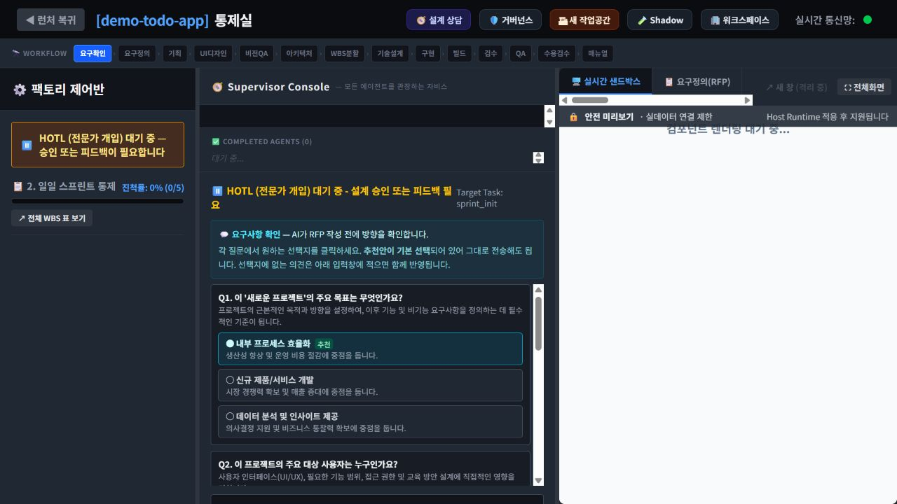
지금 결정해야 할 것과 데이터 신뢰 상태를 첫 화면에서 확인합니다.
무엇을 만들지 모르는 사용자에게 필요한 데이터와 실행 청사진을 먼저 제안합니다.

업무 SW 프로젝트를 만들고, 프로젝트·Mega·릴리스·보관함을 관리합니다.
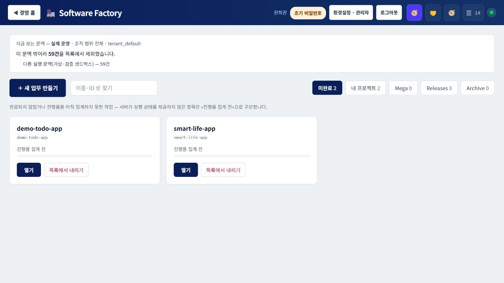
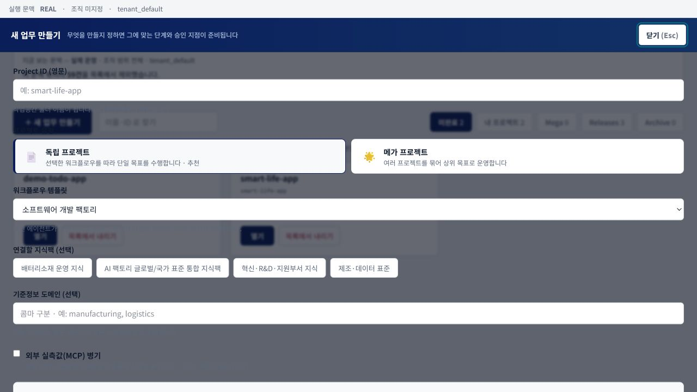
요구확인부터 릴리스까지 전체 단계를 숨기지 않고 사용자 검토와 함께 진행합니다.
승인된 문서와 근거를 지식팩으로 관리하고 생성·상담·검토에 연결합니다.
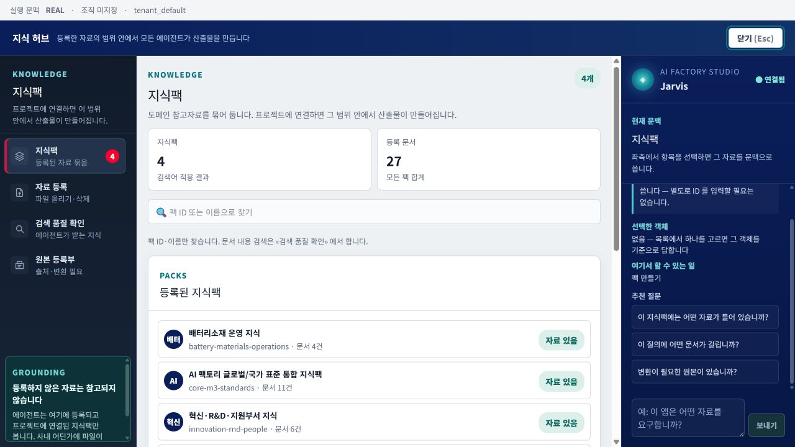
경영 계산과 업무 앱이 공통으로 사용할 기준정보를 버전과 범위로 관리합니다.
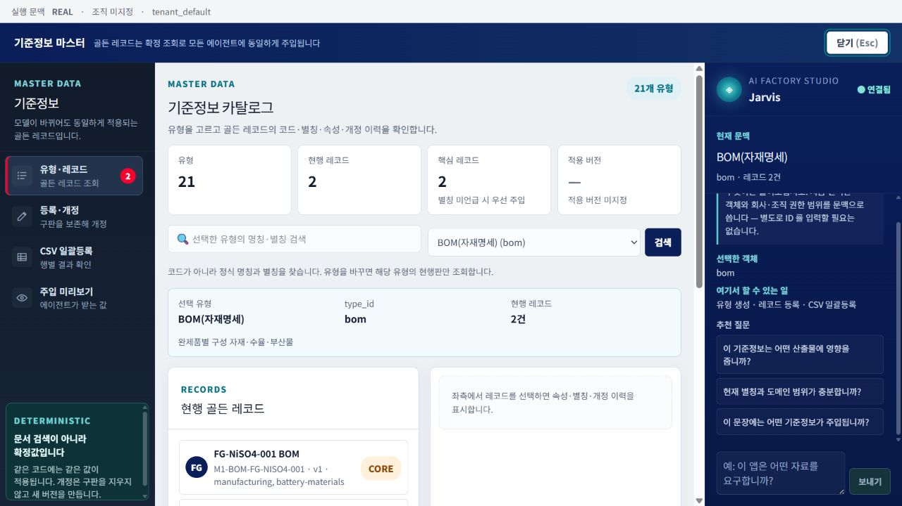
노출 범위·중복·정정·계약·외부지표의 이상을 “0건”으로 숨기지 않습니다.
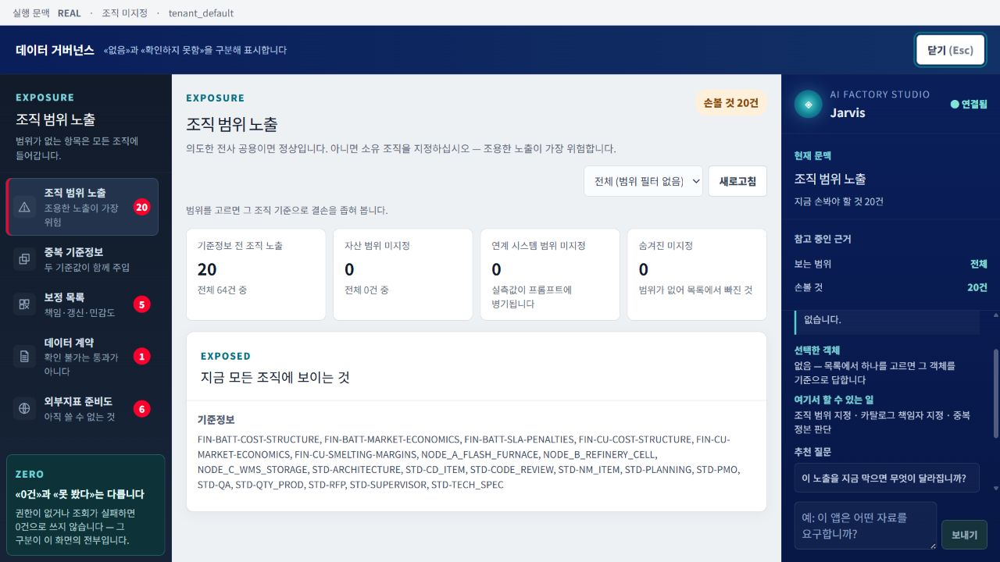
그룹에서 공장까지 회사 구조와 사용자의 역할·범위를 경영 문맥으로 관리합니다.
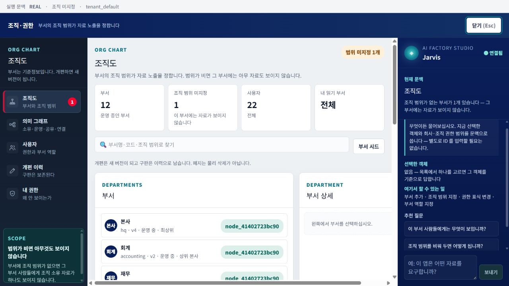
AI 에이전트의 역할·스킬·모델·순서·사용자 검토 지점을 템플릿으로 관리합니다.
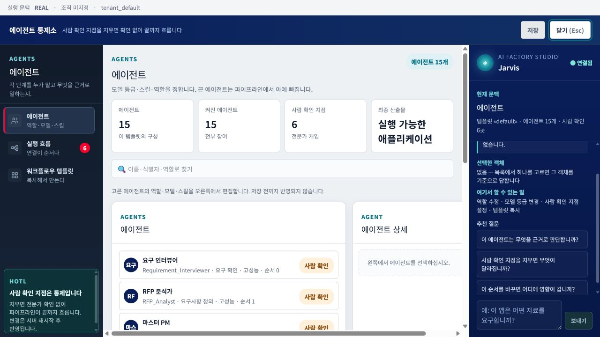
승인된 입력과 계산식을 사용해 계획·실적·현금흐름·백테스트를 비교합니다.
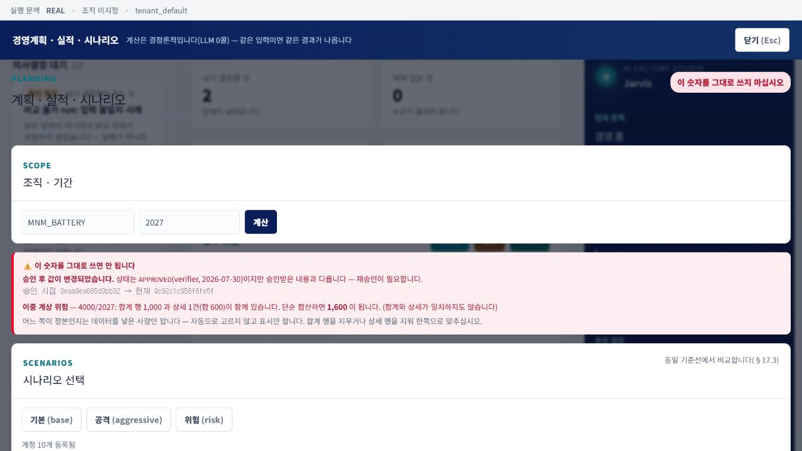
하나의 결정 패키지를 요청자·의사결정자·영향부서 세 관점으로 제공합니다.
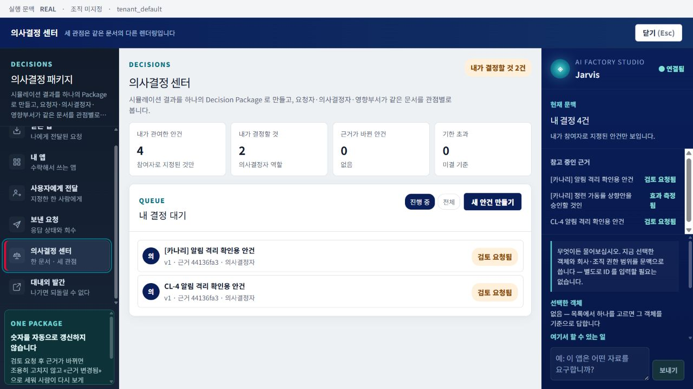
승인된 결정 Snapshot으로 보고서를 만들고, 대상별 게이트를 통과한 문서만 배포합니다.
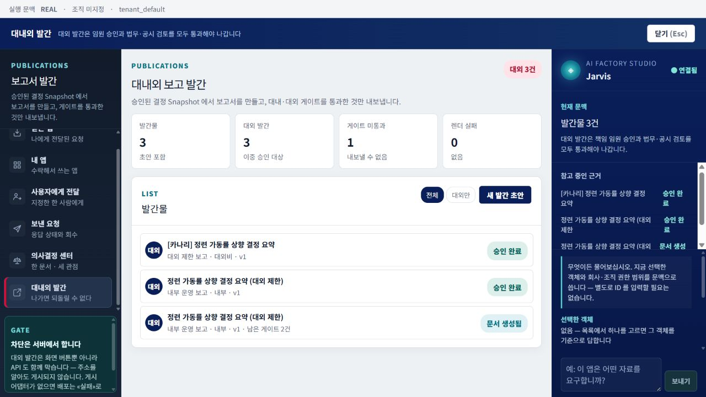
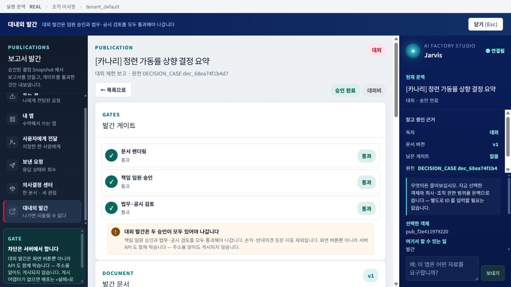
전사 실적·결정·차단·데이터 품질·프로그램·AI 비용을 경영 관점으로 집계합니다.
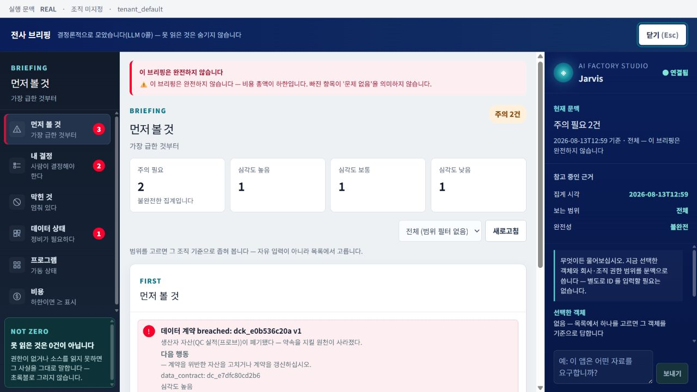
Implementation status
이 소개서의 화면은 현재 제품에서 확인한 기능입니다. 다만 실제 경영 현장 적용을 위해서는 보안 런타임·데이터 기준선·온톨로지·결정론 계산 그래프·Shadow Pilot의 종단 완주가 필요합니다.
| 영역 | 현재 확인된 기반 | 제품 완성을 위한 다음 증명 | 판정 기준 |
|---|---|---|---|
| 앱 생성 | 상담·워크플로우·WBS·구현·검수·릴리스 화면과 파이프라인 | Host Runtime SDK·단기 Capability Token·릴리스 적격성 종단 적용 | 생성 앱이 상위 권한을 우회하지 않음 |
| 데이터·지식 | MDM·지식팩·거버넌스·조직 범위 기반 | 실제 원료 구매 데이터 Snapshot·대사·CERTIFIED 기준선 | 원천 합계와 허용 오차 내 일치 |
| 의미·영향 | 계보 탐색과 영향 API 기반 | 제조 경영 온톨로지의 관계·승인·버전·유효기간·근거 경로 | 영향 경로가 권한 내에서 재현됨 |
| 계산·시뮬레이션 | 계획 엔진·계산 브리지·백테스트 기반 | 원료 가격·운임·환율→재고·생산·현금·손익 수직 계산 그래프 | 동일 입력은 동일 결과, 과거 기간 재현 |
| 폐루프 | 결정 패키지·발간·전사 브리핑 UI와 도메인 | 결정→실행→효과 측정→지식 환류 Shadow Pilot | 비용·시간·오차·수정량의 개선 실측 |
원료 구매·도입계획 → 통관·운송 → 생산 투입 → 재고 → 현금흐름·손익 → 시뮬레이션 → 의사결정 → 실행 효과 측정의 단일 수직 폐루프.
본 문서는 제품 구조와 현재 구현 기능을 설명하기 위한 자료이며, 화면 내 검증 데이터가 실제 기업 실적을 의미하지는 않습니다.
FROM DATA TO DECISION
AI Factory Studio는 더 많은 AI 기능을 보여주는 제품이 아니라, 실제 기업 데이터와 책임 있는 의사결정을 연결하는 제조 경영 기반을 지향합니다.